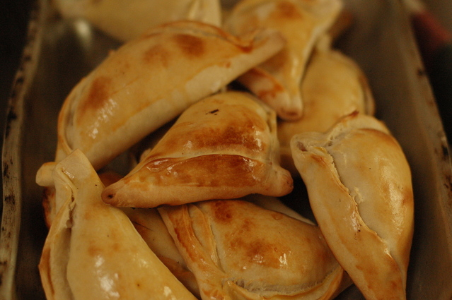
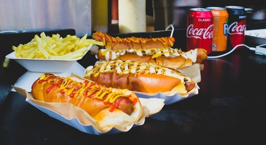
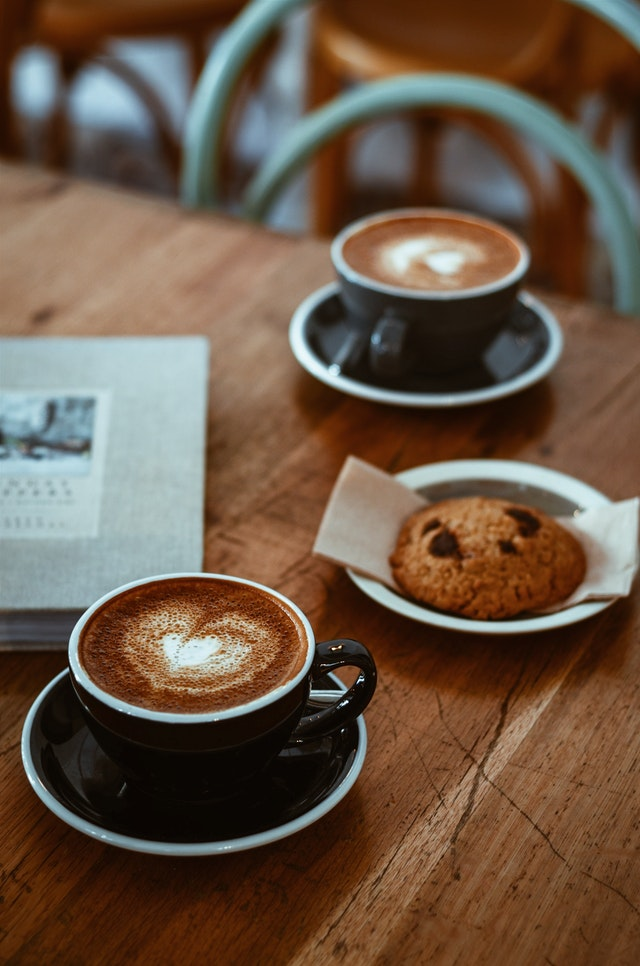
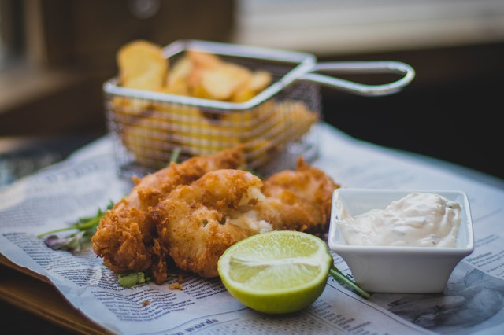

| Fecha - hora inicio | Fecha - hora término | Comuna | Sector | Tipo | Foto |
|---|---|---|---|---|---|
| 2022-01-22 09:00 |
2022-01-22 13:00 |
Santiago | Parque O'Higgins | Chilena: Empanadas de pino, queso, helado, camarón, manzana |  |
| 2022-01-21 10:00 |
2022-01-22 16:00 |
La Cisterna | Metro La Cisterna | Completos: italiano y variedes, sushipleto, de chocolate |  |
| 2022-01-19 07:00 |
2022-01-22 11:00 |
San Bernardo | Plaza | Café y Snacks: todo tipo de café y variedad de postres |  |
| 2022-01-18 12:00 |
2022-01-22 18:00 |
Antofagasta | Plaza Colón | Pescados y mariscos: frito, ceviche, pingüino, helado de pescado |  |
| 2022-01-15 16:00 |
2022-01-22 21:00 |
Ñuñoa | Estadio Nacional | Helados: caseros, de agua, de crema, de pescado |  |